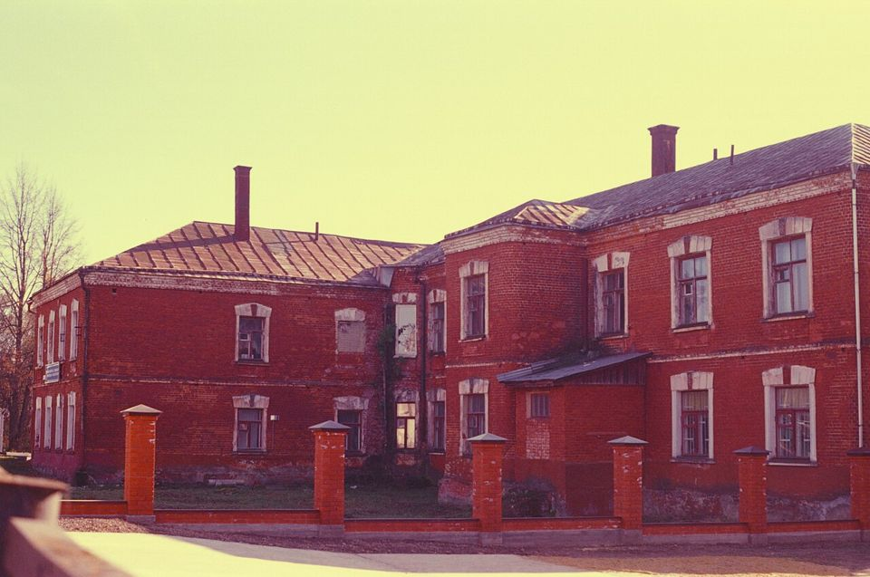

36 EXP. / 필름 / Kodak Ektachrome E100
Kodak Ektachrome E100
깨끗하고 살짝 차가운 색의 슬라이드 필름. Velvia보다 자연스러운 채도를 원할 때 고릅니다.

한눈에 보기
- 감도
- ISO 100
- 종류
- 슬라이드(리버설) · E-6 현상
- 판형
- 135 · 120 · 시트
- 이럴 때
- 맑은 날 풍경, 여행, 라이트박스 감상
- 가격
- 약 3.5만 ~ 4.5만 원
특징
- 중립에서 약간 차가운 색
- 입자가 매우 고움
- 관용도 ±½~1스톱으로 좁음
찍을 때 팁
관용도가 좁아요. 밝은 부분에 노출을 맞추고, 애매하면 반 스톱 어둡게.
이 필름에 대해
2018년에 다시 생산되기 시작한 Kodak의 슬라이드 필름입니다. Velvia처럼 과장된 색이 아니라 실제에 가까운 깨끗한 색을 내고, 피부 톤도 비교적 자연스럽습니다. E-6 현상을 받는 현상소를 먼저 확인하세요.
현상
슬라이드 현상. 35mm 한 롤 현상+스캔은 대략 1만~1만 7천 원으로 C-41보다 비쌉니다. 맡기기 전에 E-6 가능 여부를 꼭 문의하세요.